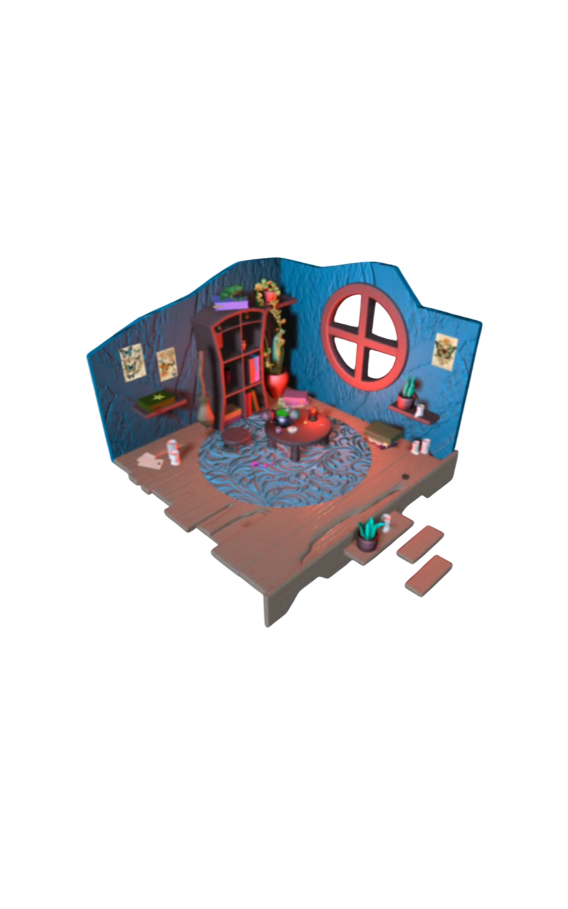

<!DOCTYPE html>
<html>

</html>
<head>
    <link rel="stylesheet" href="style.css">
</head>
<body>
     <div class="quadrato-bianco4">
            
            <div>
                <h2>
                    L'atelier della Strega
                </h2>
                <p>
                    "Un piccolo universo magico racchiuso in uno spazio virtuale. In questo progetto su Spline, ho curato ogni dettaglio per ricreare l’atmosfera caotica e affascinante dell’atelier di una fattucchiera. Naviga tra gli scaffali per scoprire le texture delle ampolle di pozioni, la trama della scopa e il guizzo della rana che osserva dall'ombra. Un esercizio di world-building e illuminazione per rendere tangibile l’incanto del 3D."
                </p>
            </div> 
        
    </div>
       <div class="quadrato-bianco5">
        <a>
            
        </a>
        <div>

        </div>
    </div>
</body>